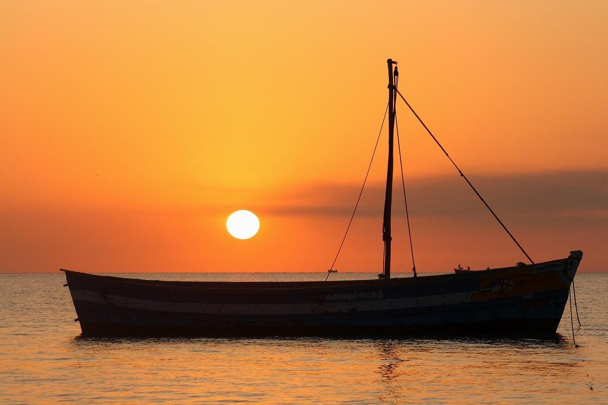
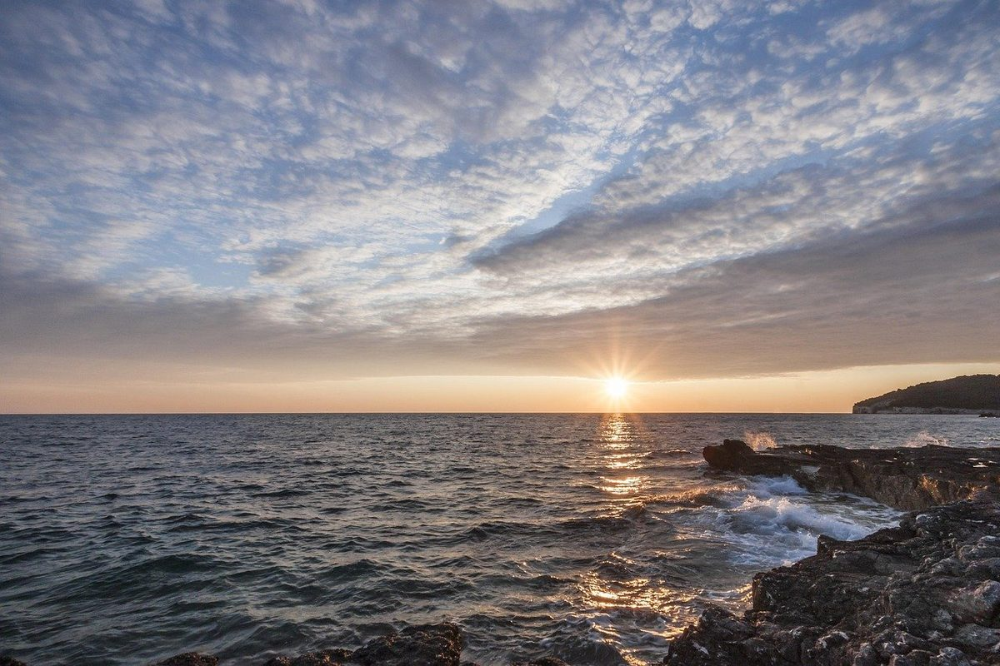

Dolphin tour in Pula
An evening cruise around the Brijuni Islands in the golden light, with a chance to see dolphins.
- Time
- 18:00–21:00
- Price
- 50 € per adult
- Swimming
- No stop, no park fee
- Children
- Under 3 free
Why the evening
Dolphins live around the Brijuni archipelago and are often active towards evening, which is why this tour is timed around sunset. We sail out from the Riva, loop around the islands and keep watch, while you have a meal, a drink and some music.
Sightings are common but never guaranteed. If they stay away, you still get calm water and the best light of the day.
Even without dolphins, the light over the islands is worth the trip.

Tour details
- Time: 18:00–21:00
- Price: 50 € per adult, children under 3 free
- One meal: fish, burger or vegetarian
- Unlimited wine, juices and mineral water
- No swimming stop and no park fee
- Pets welcome on board
- Departure from the Riva, next to ACI Marina
Who it suits
Couples, families, friends and anyone who prefers a calm evening on the water. If you also want to swim, add the day tour to your stay. Many guests do both.
- Sunset tour: 18:00–21:00
- One meal and unlimited drinks
- Children under 3: free
- Pets welcome on board
Getting the most from the evening
Watch the horizon and the wake
Dolphins often show up near the stern or off the bow. Keep your camera ready.
Bring a layer
It cools down quickly on the water once the sun is low.
Keep your phone dry
A small waterproof pouch is useful if there is spray.
Come with time to spare
Arrive 30 minutes early to pick a good place.
Photos



Frequently asked questions
Where on the boat is the best place to look for dolphins?
Is the evening worth it if the dolphins stay away?
How warm is it on the water after sunset?
Can I take good photos of dolphins with a phone?
What happens after we return at 21:00?
Ready to book?
Send us your dates and group size. We check availability and reply within 24 hours.